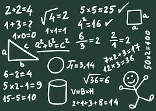

¿Que son las matematicas?
Las matemáticas nos son indispensables. Describen fenómenos cotidianos y nos ayudan a entender nuestro entorno.
Las matemáticas se pueden definir como “la ciencia que estudia las relaciones entre cantidades, magnitudes y propiedades, y las operaciones lógicas mediante las cuales se pueden deducir cantidades, magnitudes y propiedades desconocidas”, en general las propiedades de los números y las relaciones que se establecen entre ellos.
Aunque muchos de nosotros podemos imaginarnos operaciones muy complejas, el ejercicio de esta ciencia va desde el estudio de magnitudes como en geometría, de números como en aritmética o de la generalización de estos dos campos como en álgebra. Incluso en términos tan simples como la búsqueda de patrones.

Menu